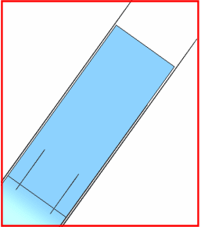

Make the midsurface the work layer
 Format→ Layer Settings
Format→ Layer Settings
-
Work Layer
5
-
Enter
Layer 5, which contains the midsurface, becomes the work layer.
-
Layers
-
 1
1Layer 1, which contains the solid geometry, is hidden.

-
Close
Examine the midsurfaces. Zoom in and notice that there are gaps between the midsurfaces. The original part had component surfaces that are perpendicular to one another. When the midsurfaces were created for each component in the assembly, the midsurfaces did not intersect.
